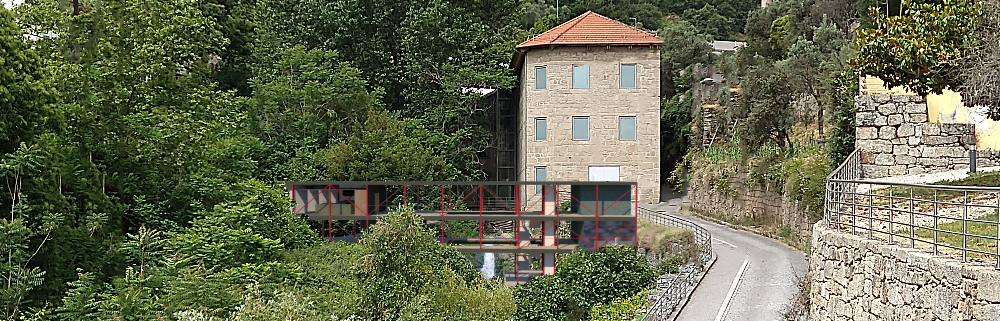
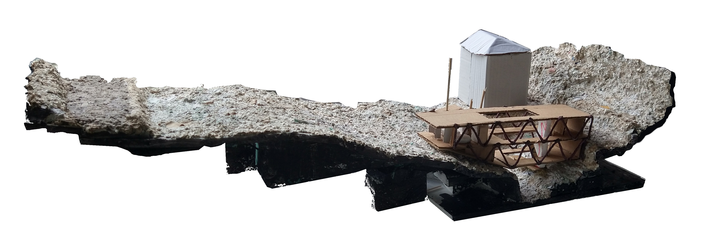
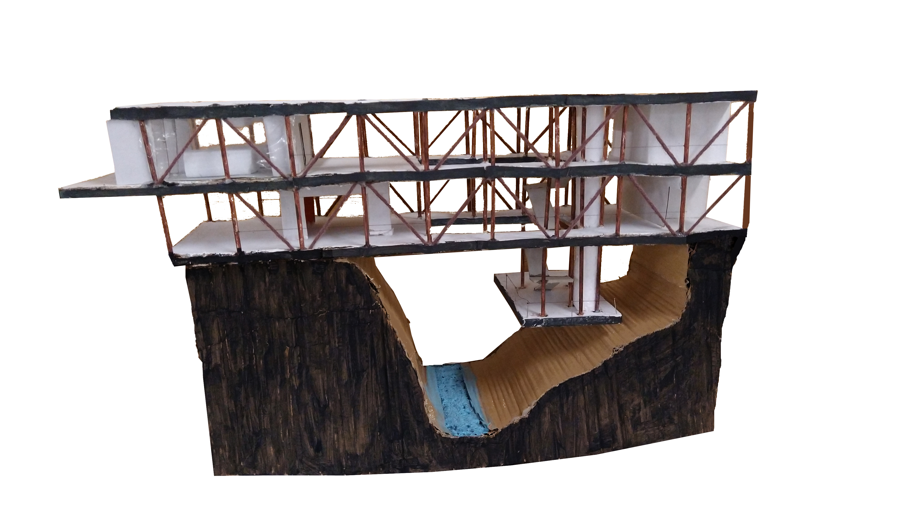
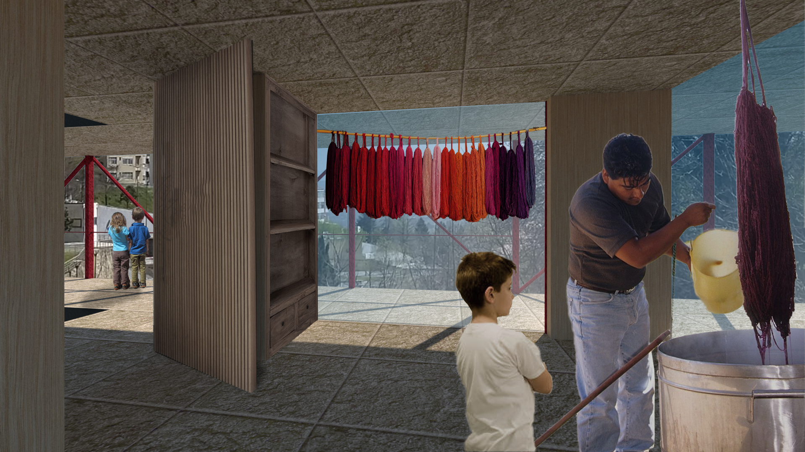
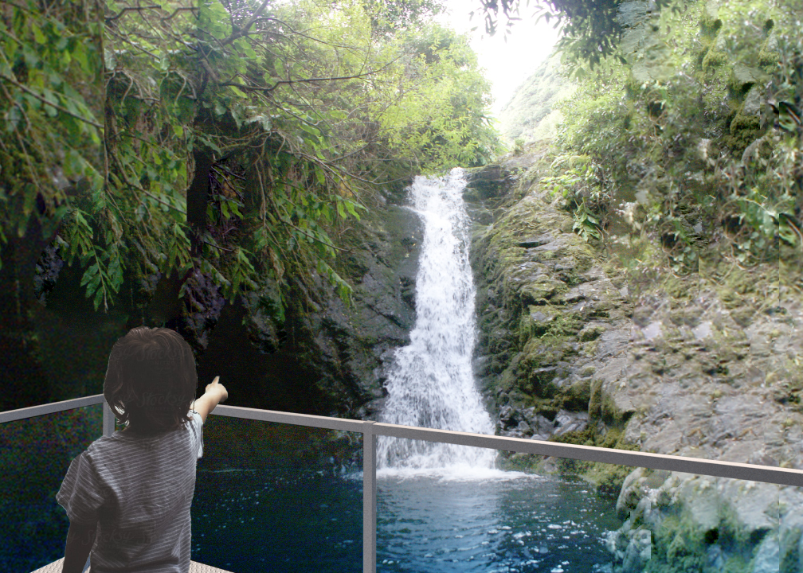

Video
Challenged by Museu dos Lanificios, part of my home university (UBI) to create an educational centre for youths to learn about wool history in Covilhã. Answered this call by solving another issue many architects tried to solve on this town before: accessibility. That’s why I’ve chosen a bridge-like structure, to allow access to different Museum’s areas, while at the same time imposing minimal footprint possible (and nice view down the valley).



Some maquettes

Education room

Lower level to enjoy the waterfall